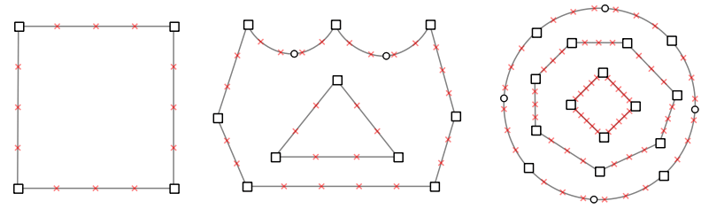
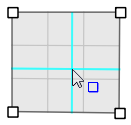

创建块体、分割与删除
块体是内部带有网格的多边形。可使用块体划分工具（ ）或自动块体划分工具（
）或自动块体划分工具（ ）由闭合（水密）多边形创建块体。三边或四边的闭合单连通多边形可使用结构化或非结构化网格划分；所有其他多边形只能使用非结构化网格划分。下图动画给出了具有结构化、非结构化和混合网格的各类块体的示例。
）由闭合（水密）多边形创建块体。三边或四边的闭合单连通多边形可使用结构化或非结构化网格划分；所有其他多边形只能使用非结构化网格划分。下图动画给出了具有结构化、非结构化和混合网格的各类块体的示例。


图 1：使用块体划分工具单击闭合多边形将使其被划分网格
创建单个块体
单击块体划分工具按钮（），将鼠标光标移入某个闭合多边形内。如果该多边形以浅蓝色高亮显示，则可用结构化网格划分（前提是 网格划分参数（Meshing Parameters） 具有相应设置）。如果该多边形以浅紫色高亮显示，则只能使用非结构化网格对其进行划分。用鼠标左键单击即可划分网格。
创建多个块体
将块体划分工具置于关注区域之外，围绕预期块体单击并拖动出选择矩形。松开鼠标左键后，所有闭合多边形都将被划分网格。或者，您可以使用自动块体划分工具（）对当前挤出集合内的所有闭合多边形划分网格。
使用坐标创建块体
在块体划分工具处于活动状态时，按 [空格键] 并输入坐标。如果所提供的坐标位于某个闭合多边形内，则该多边形将被划分网格并创建块体。
关于非结构化网格块体的说明
任何改变非结构化网格块体中任一单元几何的操作（例如移动节点、改变边上的网格划分、分割边等）都将导致非结构化网格被删除。您必须重新对该块体划分网格以适应新几何。这与结构化网格块体不同：对于结构化网格块体，在块体几何改变时可动态重新生成网格（但改变控制点位置除外——这种情况下网格将被删除）。
结构化网格块体的操作
分割结构化网格块体
- 在块体划分工具处于活动状态时，将其置于结构化网格块体内将显示在鼠标点处相交的青色十字准线。单击即可将该块体分割为所示各部分。如果在某条边上执行该操作，则将分割该块体的边。请注意，这种分割将沿两个方向穿过模型传播到所有相连的结构化网格块体。

图 2：在已定义的块体内使用块体划分工具单击，将按青色十字准线所示分割该块体
使用坐标分割结构化网格块体
- 在块体划分工具处于活动状态时，将其置于结构化网格块体内可看到青色十字准线指示。如果按 Ctrl + [空格键]，将出现一个弹出属性编辑器，编辑字段中已填入鼠标指针的当前坐标。输入所需的分割坐标并按 [回车] 即可创建分割。（网格划分参数必须允许创建结构化网格。）
删除块体（网格）
使用选择工具（ ）选择一个块体，然后按 Delete。要删除多个块体，请按住 Control 并左键单击一组块体以创建多块体选择，然后按 Delete。
）选择一个块体，然后按 Delete。要删除多个块体，请按住 Control 并左键单击一组块体以创建多块体选择，然后按 Delete。
使用鼠标右键
当块体划分工具处于活动状态时，鼠标左键的选择功能转移到右键。
可通过右键单击块体来选择它。按住 Control 键右键单击，可将块体加入或移出多重选择。也可使用选择矩形选择一定范围的块体，但应先单击一个块体以指定要纳入选择的对象类型。
鼠标右键还可用于将选中对象拖动到新位置。
使用块体划分工具右键单击可选择点或边，然后将其拖动到新位置。
| 这些内容对您有帮助吗？… 版权与免责声明 |
FLAC3D © 2019, Itasca | 原文更新于 2020 年 10 月 8 日 |